63.1 Gleba Analisada: ÁGUA AZUL B-2
| Nome da Gleba | Área (ha) |
|---|---|
| ÁGUA AZUL B-2 | 9600.0000 |
63.1.1 Abrangência Municipal
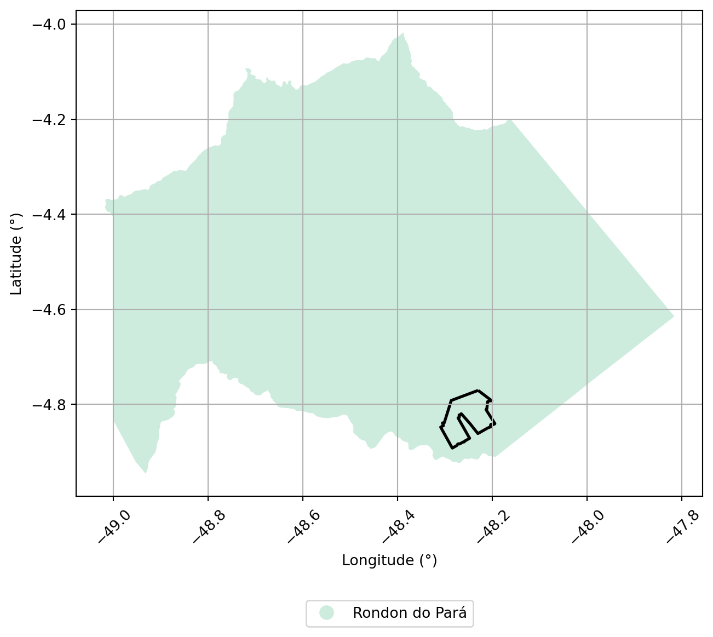
| Código da UF | Estado | UF | Código do Município | Nome do Município |
|---|---|---|---|---|
| 15.0000 | Pará | PA | 1506187 | Rondon do Pará |
63.1.2 Unidades de Conservação
Não há sobreposição
63.1.3 Terras Indígenas
Não há sobreposição
63.1.4 Projetos de Assentamento
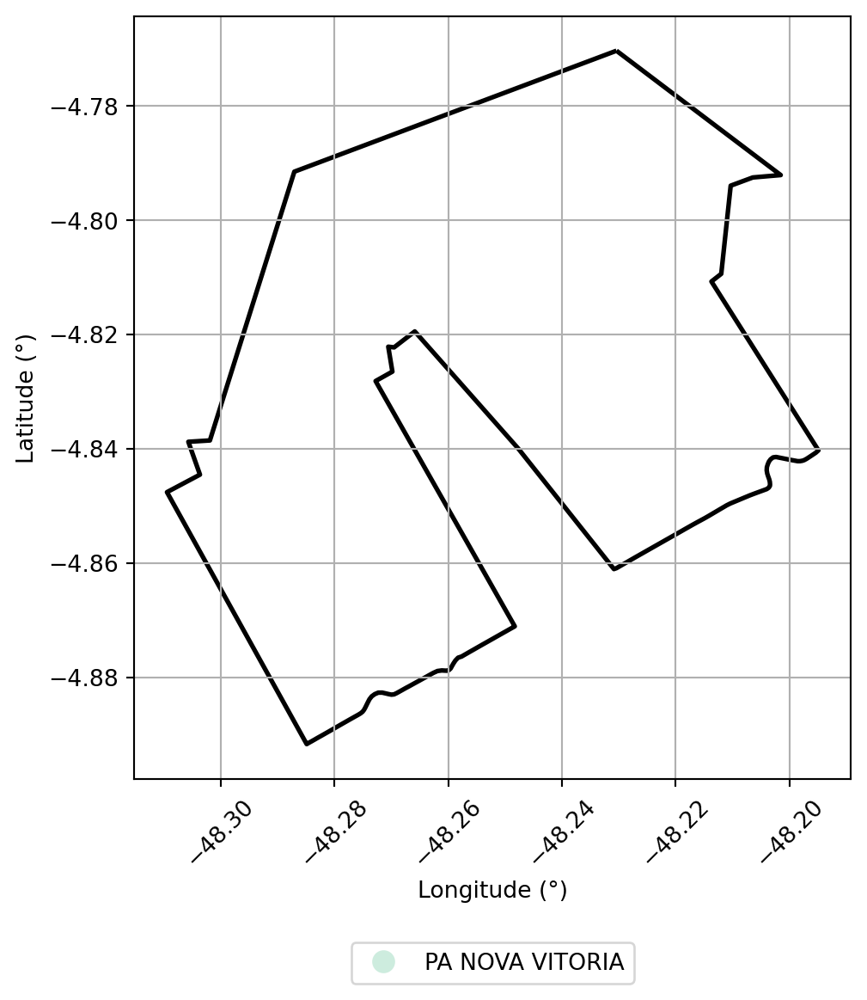
| SIPRA | Nome | Município | Área Sobreposta (ha) |
|---|---|---|---|
| MB0359000 | PA NOVA VITORIA | RONDON DO PARA | 0.0000 |
63.1.5 Território Quilombola
Não há sobreposição
63.1.6 SIGEF
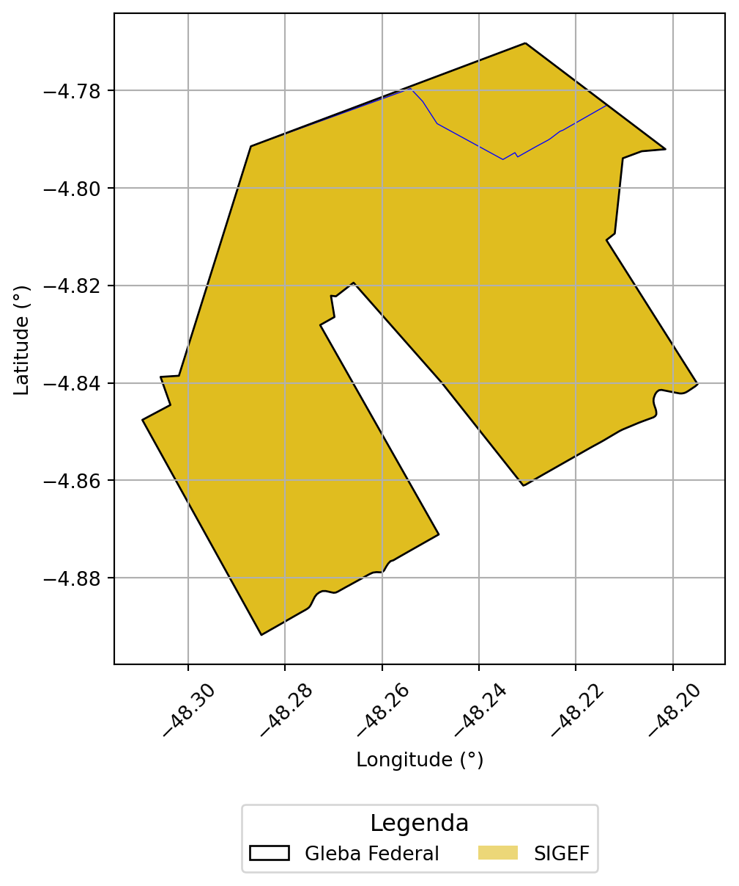
| Código SIGEF | Natureza do Polígono | Área Sobreposta (ha) |
|---|---|---|
| 90092df1-8964-405f-a3fb-0d59d60e9ef7 | Assentamento | 0.0000 |
| 2b5195dd-dd92-405c-a606-92bbca924897 | Assentamento Parcela | 0.0000 |
| 00b68a94-ff46-4efd-bd5c-6195c9b88d79 | Gleba Pública | 9104.8179 |
| 62173d9f-a03f-42d0-99d2-9874def18be9 | Particular | 58.0396 |
| aafcd1bc-e083-4665-8876-6f04d51e9b1e | Particular | 28.4611 |
| 0651128b-336c-4d0c-ba05-ff693b4b4483 | Particular | 7.7783 |
| c5e46bc1-ae67-45c4-b1bd-c90868787398 | Particular | 45.3371 |
| 6c87347b-c7de-4da6-950a-c1ea1d7e4794 | Particular | 382.1689 |
| e5c8bd38-88e1-4450-b769-e66fcbeb4770 | Particular | 103.9060 |
| f4300c4e-9067-4b3f-b418-63adb03b912c | Particular | 55.0016 |
| 5a504ccd-dbb7-4ceb-b190-3432ded4ba1b | Particular | 96.2934 |
| ec92d846-4db1-4def-9776-d9fe0de94cfe | Particular | 66.5198 |
| 6cb38bae-5314-4a21-9090-f399c44516e7 | Particular | 452.4859 |
| 24fca4f2-31d7-4f6a-8ac7-377de1a20d86 | Particular | 0.2918 |
| 8be6c4fa-8930-41b6-a09b-b84d3339945f | Particular | 0.1141 |
| 0f9cf4f5-afdf-4557-93f3-68961dd51a6d | Particular | 0.1531 |
| 15eacf0e-2e04-4946-a324-d8cc2be5ad86 | Particular | 666.8598 |
| fd40a11b-78f6-4fbb-8dff-9ffaeda557b1 | Particular | 2.7356 |
| a1366c09-e0bf-4bd1-99e8-3a25c921975d | Particular | 82.6299 |
| 0b0bfee9-0466-41c1-b8cf-f55751497620 | Particular | 122.1926 |
| 23e7b856-5572-457d-865f-d6a38c5672e0 | Particular | 152.3476 |
| b129efc2-a367-405b-8b62-d04bbfaf3c7c | Particular | 0.0844 |
| a4bd4a67-385c-4453-a329-6f8b37018769 | Particular | 0.0152 |
| 480b046f-6da3-4ec1-a37b-141250d54112 | Particular | 99.6015 |
| 1f745e62-a7ec-4532-aa90-45529b256f9a | Particular | 79.3670 |
63.1.7 SNCI
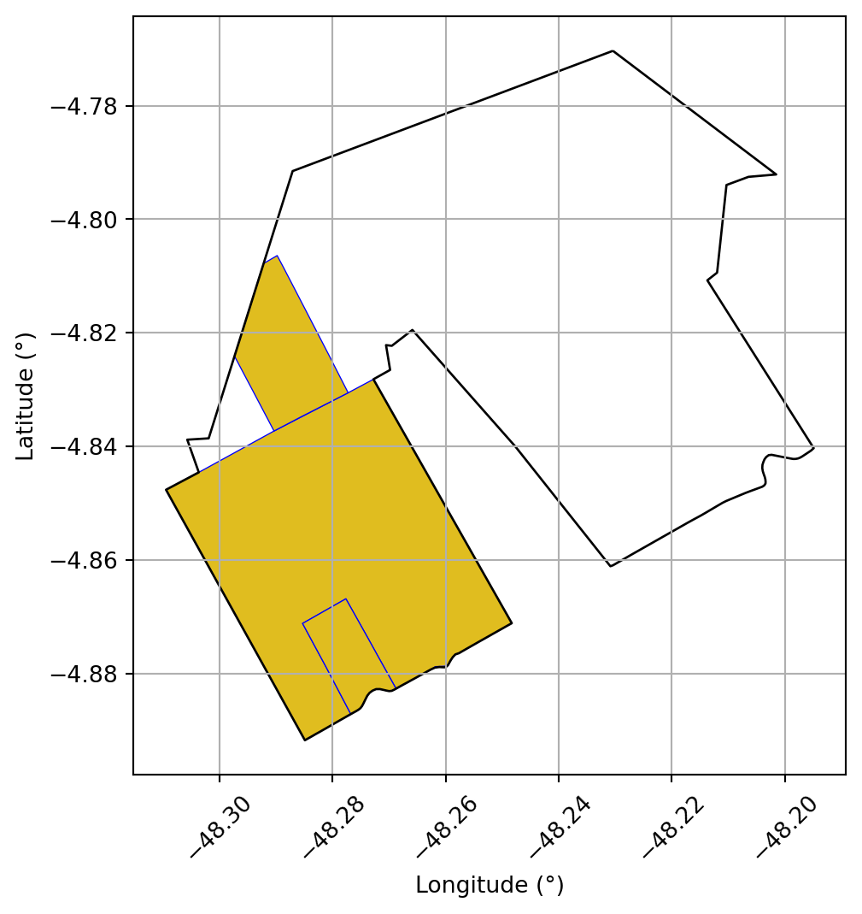
| Código SNCI | Área Sobreposta (ha) |
|---|---|
| 271106000032-65 | 191.8982 |
| 271106000033-46 | 2371.8196 |
| 271308000006-98 | 404.6975 |
63.2 Gleba Analisada: ÁGUA AZUL B-3
| Nome da Gleba | Área (ha) |
|---|---|
| ÁGUA AZUL B-3 | 760.0000 |
63.2.1 Abrangência Municipal
| Código da UF | Estado | UF | Código do Município | Nome do Município |
|---|---|---|---|---|
| 15.0000 | Pará | PA | 1506187 | Rondon do Pará |
63.2.2 Unidades de Conservação
Não há sobreposição
63.2.3 Terras Indígenas
Não há sobreposição
63.2.4 Projetos de Assentamento
Não há sobreposição
63.2.5 Território Quilombola
Não há sobreposição
63.2.6 SIGEF
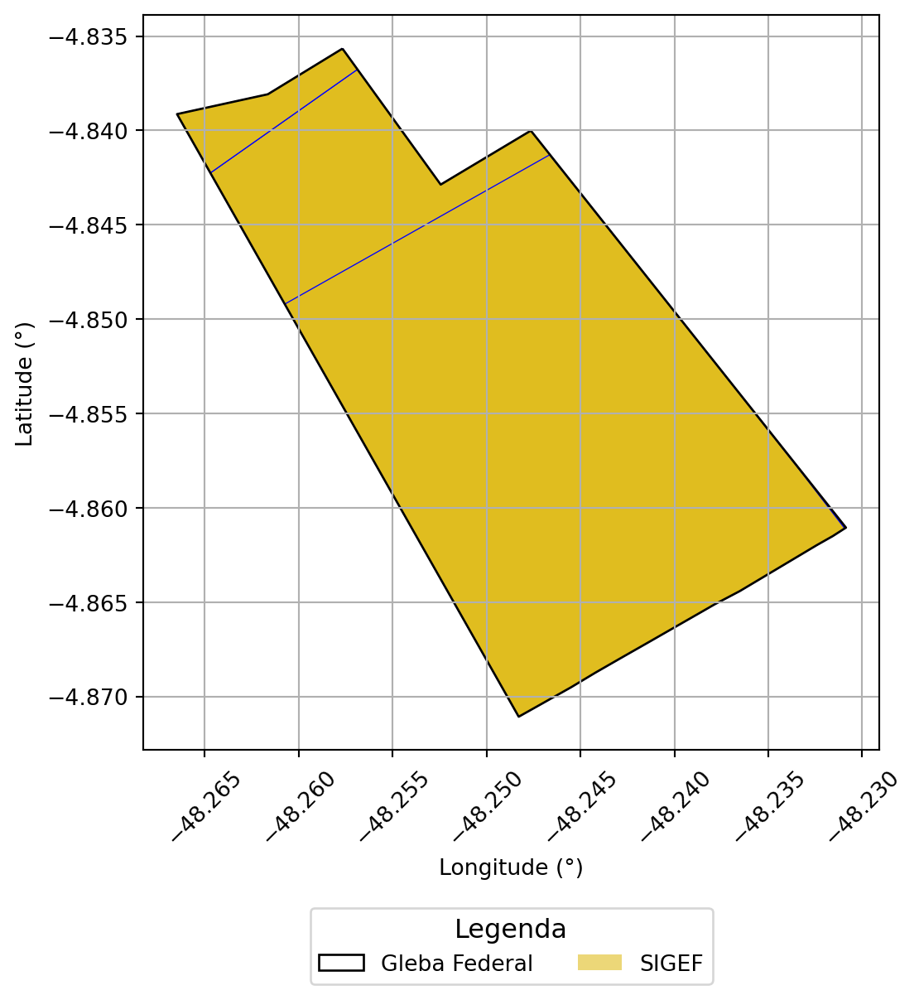
| Código SIGEF | Natureza do Polígono | Área Sobreposta (ha) |
|---|---|---|
| d229b21b-acff-4512-bb8b-8e1b62c25a26 | Gleba Pública | 701.4921 |
| 8be6c4fa-8930-41b6-a09b-b84d3339945f | Particular | 219.8098 |
| 24fca4f2-31d7-4f6a-8ac7-377de1a20d86 | Particular | 227.9395 |
| 6cb38bae-5314-4a21-9090-f399c44516e7 | Particular | 0.5553 |
| 3434e35b-0632-470a-9728-26b449d65fe4 | Particular | 5.8080 |
63.2.7 SNCI
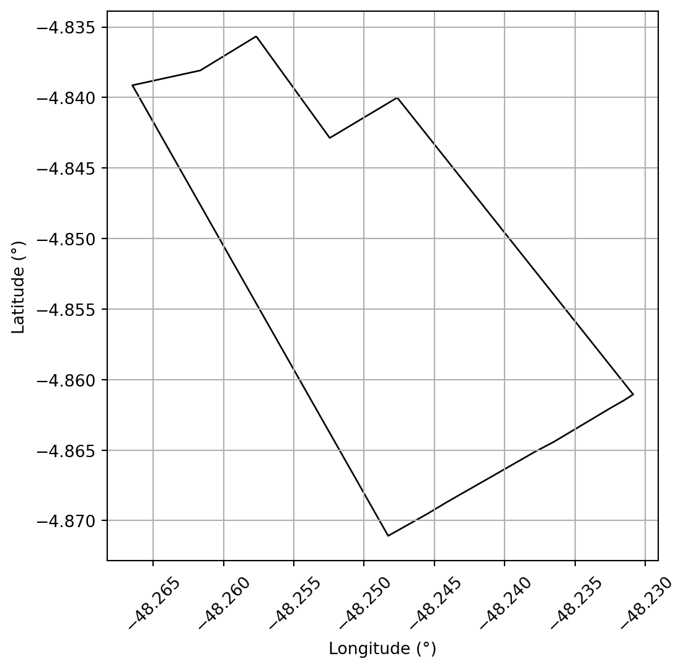
| Código SNCI | Área Sobreposta (ha) |
|---|---|
| 271106000033-46 | 0.0163 |
63.3 Gleba Analisada: ÁGUA AZUL B-4
| Nome da Gleba | Área (ha) |
|---|---|
| ÁGUA AZUL B-4 | 310.0001 |
63.3.1 Abrangência Municipal
| Código da UF | Estado | UF | Código do Município | Nome do Município |
|---|---|---|---|---|
| 15.0000 | Pará | PA | 1506187 | Rondon do Pará |
63.3.2 Unidades de Conservação
Não há sobreposição
63.3.3 Terras Indígenas
Não há sobreposição
63.3.4 Projetos de Assentamento
Não há sobreposição
63.3.5 Território Quilombola
Não há sobreposição
63.3.6 SIGEF
| Código SIGEF | Natureza do Polígono | Área Sobreposta (ha) |
|---|---|---|
| 219f8322-200a-4cd7-a8cf-ce501b50f0bb | Gleba Pública | 301.7667 |
| 6c87347b-c7de-4da6-950a-c1ea1d7e4794 | Particular | 0.1062 |
63.3.7 SNCI
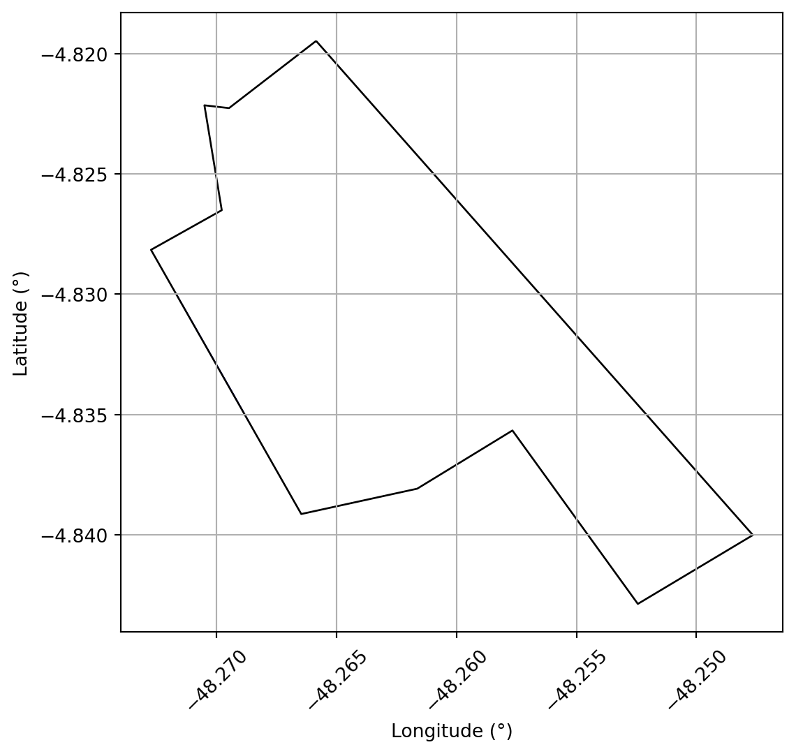
| Código SNCI | Área Sobreposta (ha) |
|---|---|
| 271106000033-46 | 0.0340 |
63.4 Gleba Analisada: ÁGUA AZUL B-5
| Nome da Gleba | Área (ha) |
|---|---|
| ÁGUA AZUL B-5 | 2800.0001 |
63.4.1 Abrangência Municipal
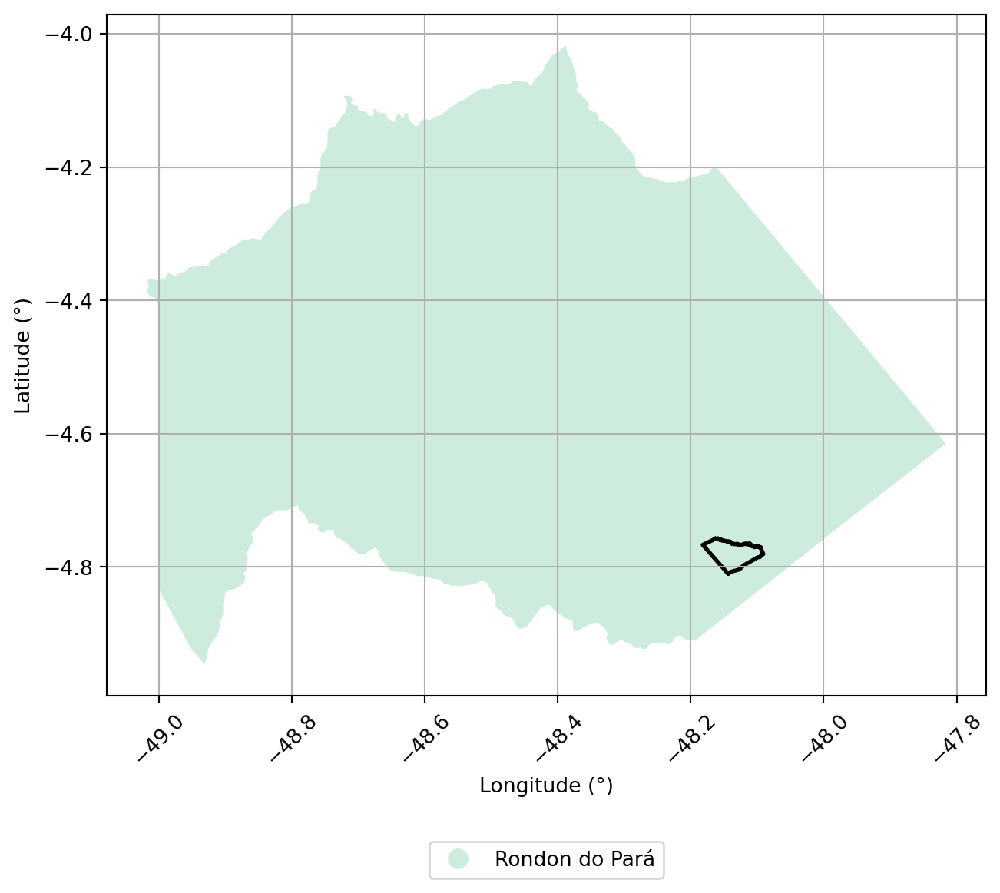
| Código da UF | Estado | UF | Código do Município | Nome do Município |
|---|---|---|---|---|
| 15.0000 | Pará | PA | 1506187 | Rondon do Pará |
63.4.2 Unidades de Conservação
Não há sobreposição
63.4.3 Terras Indígenas
Não há sobreposição
63.4.4 Projetos de Assentamento
Não há sobreposição
63.4.5 Território Quilombola
Não há sobreposição
63.4.6 SIGEF
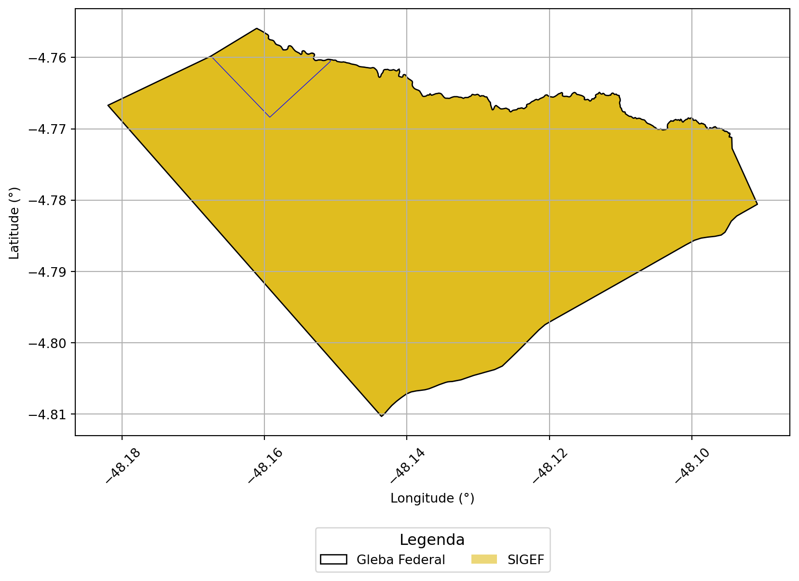
| Código SIGEF | Natureza do Polígono | Área Sobreposta (ha) |
|---|---|---|
| 3c6725d4-960a-498d-835f-033157897ac8 | Gleba Pública | 3183.8607 |
| 1daa4ca1-2ad0-4056-b953-25003caf940c | Particular | 168.0600 |
| fb70d9ac-25c1-41a4-b90d-bdf5e29ac6ed | Particular | 121.4326 |
| 0eda0147-be27-42a9-bc68-4394107a5517 | Particular | 36.0871 |
63.4.7 SNCI
Não há sobreposição
63.5 Gleba Analisada: ÁGUA AZUL B-6
| Nome da Gleba | Área (ha) |
|---|---|
| ÁGUA AZUL B-6 | 1500.0000 |
63.5.1 Abrangência Municipal
| Código da UF | Estado | UF | Código do Município | Nome do Município |
|---|---|---|---|---|
| 15.0000 | Pará | PA | 1506187 | Rondon do Pará |
63.5.2 Unidades de Conservação
Não há sobreposição
63.5.3 Terras Indígenas
Não há sobreposição
63.5.4 Projetos de Assentamento
Não há sobreposição
63.5.5 Território Quilombola
Não há sobreposição
63.5.6 SIGEF
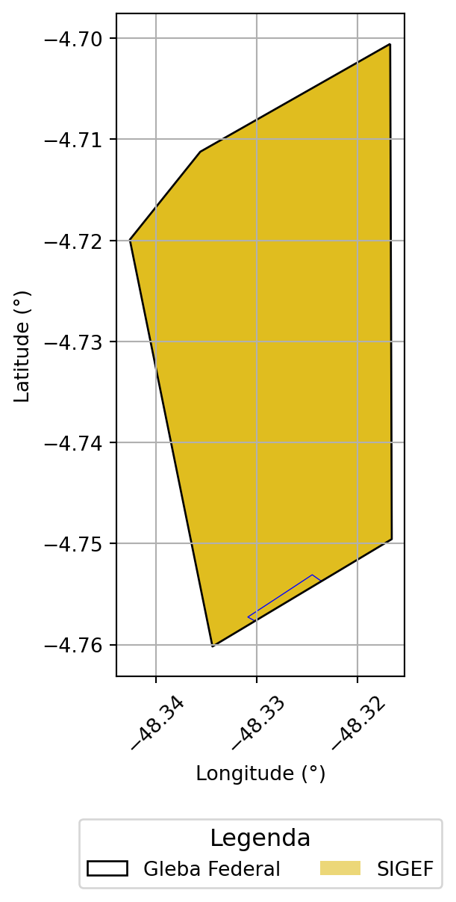
| Código SIGEF | Natureza do Polígono | Área Sobreposta (ha) |
|---|---|---|
| 08f8555f-76a7-41c1-a4b2-c88ac2da4b1b | Gleba Pública | 1335.7967 |
| 36bf6e1c-085a-4515-9490-ee59e91c8812 | Particular | 0.0013 |
| 4c43e0bf-bb46-46e1-a27a-8ceaa88481b9 | Particular | 0.0005 |
| 3ed5bd61-3c40-40d2-bf27-16f4bb170bd4 | Particular | 0.2951 |
| 15764521-f3c3-4e5a-9b08-306874618b36 | Particular | 8.2233 |
63.5.7 SNCI
Não há sobreposição
63.6 Gleba Analisada: ÁGUA AZUL B-7
| Nome da Gleba | Área (ha) |
|---|---|
| ÁGUA AZUL B-7 | 110.0000 |
63.6.1 Abrangência Municipal
| Código da UF | Estado | UF | Código do Município | Nome do Município |
|---|---|---|---|---|
| 15.0000 | Pará | PA | 1506187 | Rondon do Pará |
63.6.2 Unidades de Conservação
Não há sobreposição
63.6.3 Terras Indígenas
Não há sobreposição
63.6.4 Projetos de Assentamento
Não há sobreposição
63.6.5 Território Quilombola
Não há sobreposição
63.6.6 SIGEF
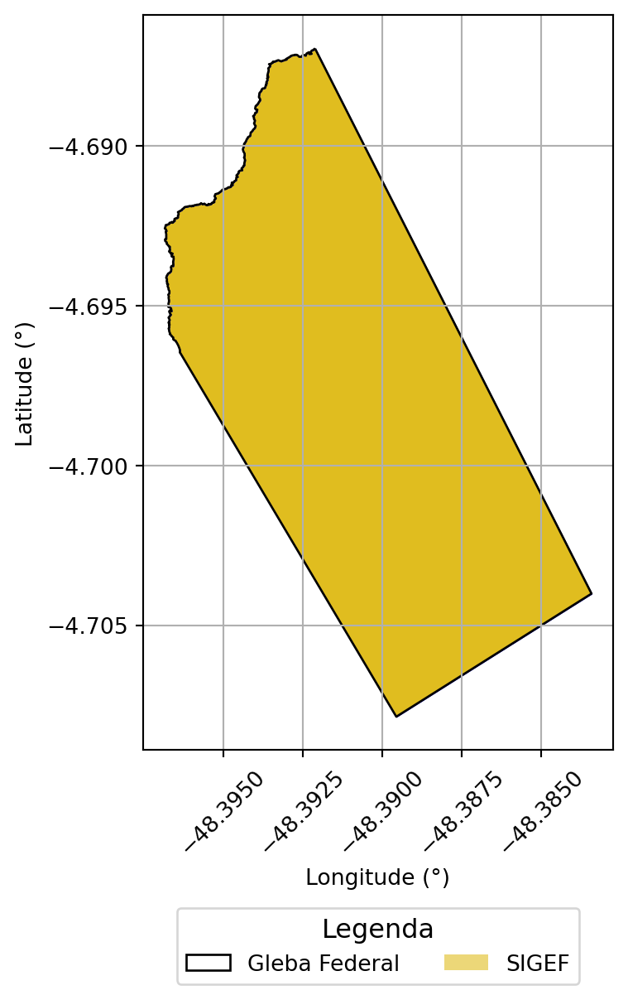
| Código SIGEF | Natureza do Polígono | Área Sobreposta (ha) |
|---|---|---|
| d98cae5b-47bb-4b82-9747-40936fe766e2 | Gleba Pública | 167.5976 |
63.6.7 SNCI
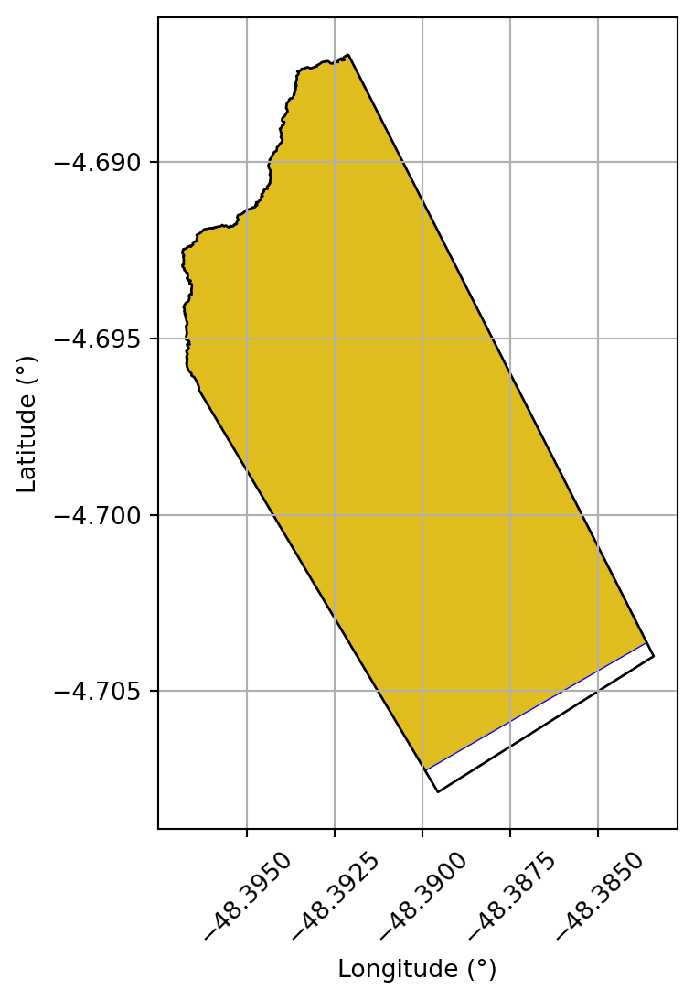
| Código SNCI | Área Sobreposta (ha) |
|---|---|
| 271302000049-60 | 162.3471 |
63.7 Gleba Analisada: ÁGUA AZUL B-8
| Nome da Gleba | Área (ha) |
|---|---|
| ÁGUA AZUL B-8 | 5300.0001 |
63.7.1 Abrangência Municipal
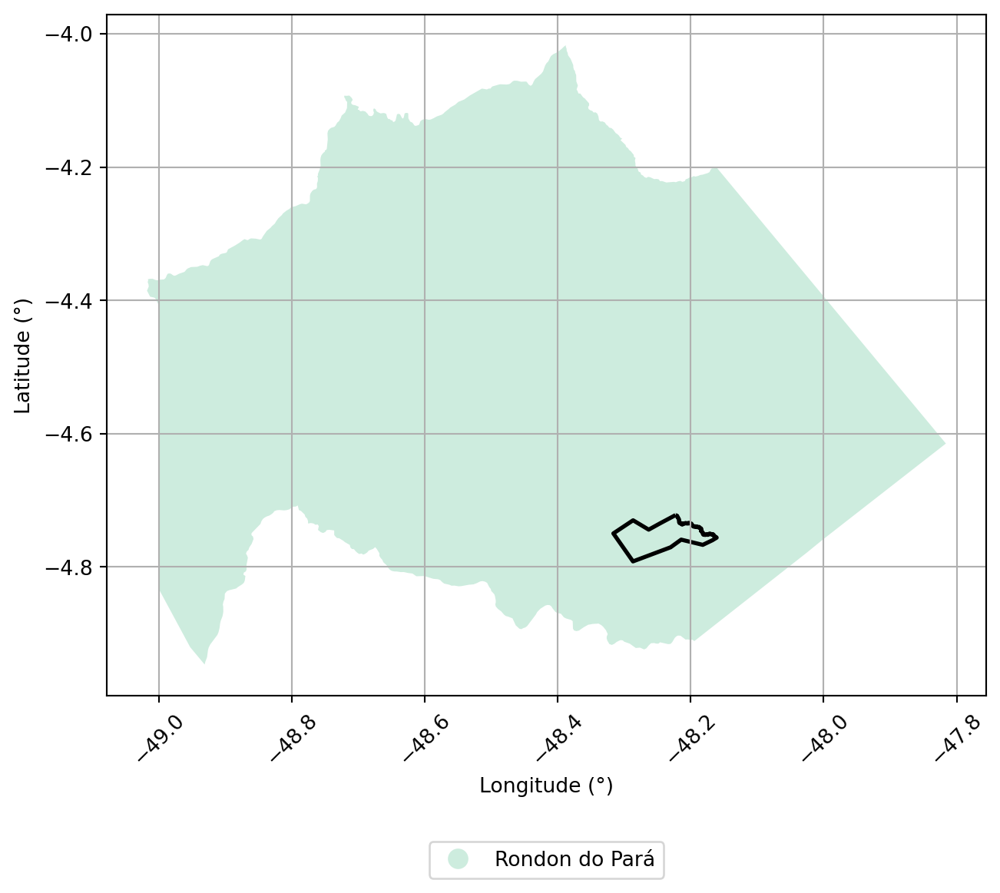
| Código da UF | Estado | UF | Código do Município | Nome do Município |
|---|---|---|---|---|
| 15.0000 | Pará | PA | 1506187 | Rondon do Pará |
63.7.2 Unidades de Conservação
Não há sobreposição
63.7.3 Terras Indígenas
Não há sobreposição
63.7.4 Projetos de Assentamento
Não há sobreposição
63.7.5 Território Quilombola
Não há sobreposição
63.7.6 SIGEF
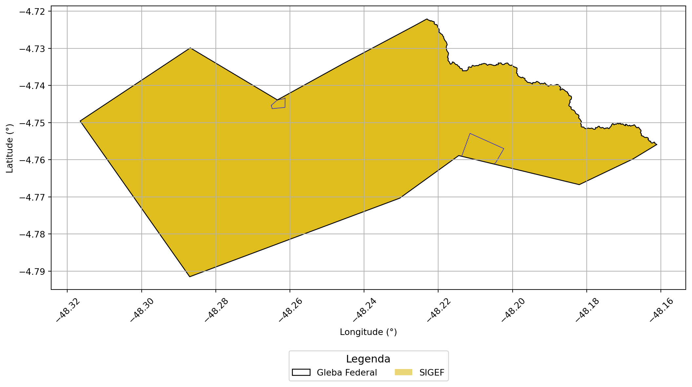
| Código SIGEF | Natureza do Polígono | Área Sobreposta (ha) |
|---|---|---|
| 8aec4c26-2d8b-4867-a8b1-13239985dc7e | Gleba Pública | 6286.4147 |
| 26770a2b-2db4-4b09-89b6-5b918b25121c | Particular | 92.2404 |
| ed396bb9-a043-47cd-ba12-102faee45117 | Particular | 24.1962 |
| b188d0e9-2481-4ca1-9bbe-0dae7dfdbbe7 | Particular | 24.1229 |
| e7b5c549-9238-4aff-88a3-06177dfa8538 | Particular | 23.8634 |
| d7ffbd6f-d11b-4cd8-b388-a72e45d23be5 | Particular | 48.7473 |
| 8e7fac2c-eaad-456c-b7f5-0158dffa9e34 | Particular | 126.4429 |
| f510f40e-2daa-4490-bc92-ffe5dcbc4d3c | Particular | 155.9360 |
| e6a6e999-af23-4879-9b4c-676aac460737 | Particular | 0.8394 |
| 2d2b528d-ca08-46a0-8165-46a3aa80e5ee | Particular | 50.5478 |
| e65e9186-1e09-4cd1-b4dc-9cc9663b9af3 | Particular | 1433.3358 |
| 3e2b7f51-2b3b-4bbf-874c-c64d0305e106 | Particular | 24.2648 |
| a8d58882-d55d-4e84-9638-feb52f918137 | Particular | 650.1688 |
| c1d51b06-9d27-4073-b7af-0a84e5a06182 | Particular | 204.9256 |
| fad425fc-e5ef-4399-9142-6141e0bb883b | Particular | 180.7871 |
| 4758970b-4a49-40f4-9576-59c9b03f78de | Particular | 51.0003 |
| 149225c6-7e42-4b78-aa85-e21347c988a2 | Particular | 65.7916 |
| 7bf62bd5-ad32-4b35-befa-78c78a570dd4 | Particular | 32.9546 |
| 96a11ad7-1346-4957-b024-08b8689534f7 | Particular | 102.9547 |
| 832011f8-41a3-4ea6-8908-04e684fd3e84 | Particular | 15.9154 |
| ad203058-a7d8-4da6-afa2-ce0997ff2b4e | Particular | 46.0090 |
| fa8c339f-f911-4b3a-9847-917a578959c6 | Particular | 47.8675 |
| c0696a47-80ff-4988-bf76-40c763351118 | Particular | 128.7866 |
| fb70d9ac-25c1-41a4-b90d-bdf5e29ac6ed | Particular | 66.0587 |
| d9da4bc1-9d86-48ad-8c2d-784af6769961 | Particular | 49.9972 |
| 15764521-f3c3-4e5a-9b08-306874618b36 | Particular | 141.8122 |
| f7864e3c-d671-45fa-af9d-bbad6dfe4be0 | Particular | 11.5002 |
| fd40a11b-78f6-4fbb-8dff-9ffaeda557b1 | Particular | 0.0001 |
| 15eacf0e-2e04-4946-a324-d8cc2be5ad86 | Particular | 771.0807 |
| a303933f-691e-47f2-acaa-15b13ee43cdb | Particular | 108.3690 |
| fd22670f-5051-4e7c-8dbe-361d4911d08e | Particular | 47.9510 |
| e407081a-8678-4ba5-930b-fc0327178d2c | Particular | 128.1116 |
| 45641c00-ad1d-46c2-8f3e-4c33367488db | Particular | 108.2745 |
| ff061ceb-eba0-4932-a8c0-de035686e7f6 | Particular | 147.0912 |
| 45c58c0a-578f-44b9-85d1-2cac06098902 | Particular | 49.2965 |
| e8b41770-e702-4a0a-aa14-cecee51f4017 | Particular | 86.6639 |
| 9cd5c3d5-5401-4c98-8799-27988ff24b13 | Particular | 23.7757 |
| d2badd8d-fc6f-4760-89fd-e96e9faae5de | Particular | 62.8110 |
| 390c86ef-0491-4afb-aae9-422ea0823351 | Particular | 8.9410 |
| efe9fb81-507c-4db3-baf2-11341127d471 | Particular | 66.8826 |
63.7.7 SNCI
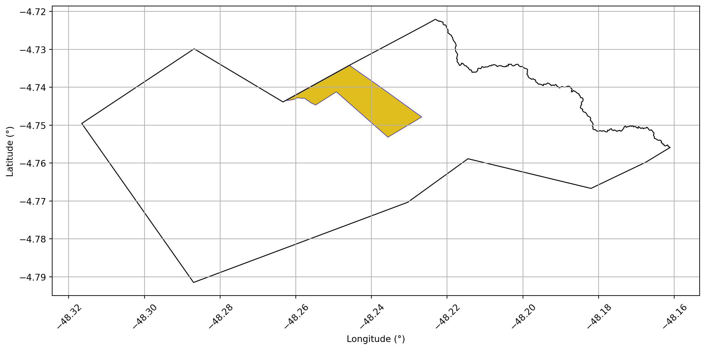
| Código SNCI | Área Sobreposta (ha) |
|---|---|
| 271404000017-16 | 289.6987 |
63.8 Gleba Analisada: ÁGUA LIMPA
| Nome da Gleba | Área (ha) |
|---|---|
| ÁGUA LIMPA | 11374.3263 |
63.8.1 Abrangência Municipal
| Código da UF | Estado | UF | Código do Município | Nome do Município |
|---|---|---|---|---|
| 15.0000 | Pará | PA | 1501725 | Brasil Novo |
| 15.0000 | Pará | PA | 1504455 | Medicilândia |
63.8.2 Unidades de Conservação
Não há sobreposição
63.8.3 Terras Indígenas
Não há sobreposição
63.8.4 Projetos de Assentamento
Não há sobreposição
63.8.5 Território Quilombola
Não há sobreposição
63.8.6 SIGEF

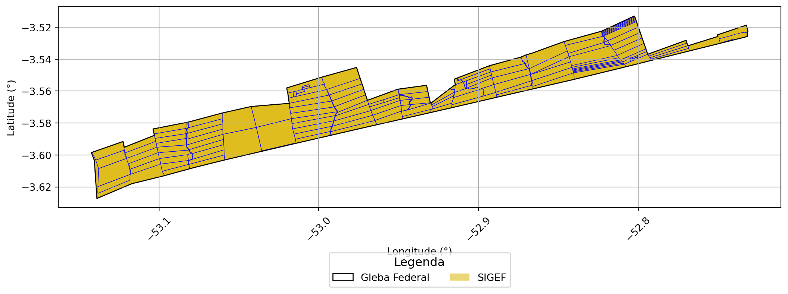
| Código SIGEF | Natureza do Polígono | Área Sobreposta (ha) |
|---|---|---|
| 9ba6ec60-a220-4c6c-9f29-a85561f5671e | Gleba Pública | 11375.3720 |
| d22f05f8-cb0f-4638-853c-da6a60afe9c8 | Particular | 9.9796 |
| bc78a448-c676-491b-94f3-04cae5309772 | Particular | 76.8925 |
| b2e394a9-2ae7-4b37-a37e-60cc5c47af78 | Particular | 20.4968 |
| 752123aa-f387-45dc-9a69-cfa4dc330c67 | Particular | 49.6019 |
| 27bf2d8a-7089-49c1-9815-01cdf4ff4e69 | Particular | 74.2469 |
| eaeeb89d-02ea-40ca-b8dd-0142b3457883 | Particular | 77.3288 |
| d8e8f358-99fd-4ac6-b4e3-9015e63db4d3 | Particular | 80.7853 |
| be727bee-3534-4772-81c7-69f467982b23 | Particular | 22.2379 |
| 275bb917-6615-432d-a4bf-c936d248e756 | Particular | 5.1756 |
| 382af726-bb66-4e6d-86bf-aa067a1a8e04 | Particular | 92.6406 |
| 5c94f007-7b50-448b-916d-22f33c266d1c | Particular | 108.6685 |
| de16a963-4392-4040-91c1-9a47e3b7c094 | Particular | 104.0556 |
| 10178a5c-8da7-4269-97ae-095ca80b01f0 | Particular | 117.7119 |
| ec04413e-68e5-4609-9e3f-e600932f818a | Particular | 130.2929 |
| fafc7614-4162-456c-b47d-d59fd7c68a0e | Particular | 18.5384 |
| b3ad6f7c-69be-4218-9345-8994e8c4a3a0 | Particular | 58.8980 |
| 59915c17-fb63-4e80-845e-352bad996bc7 | Particular | 44.5864 |
| d863e180-9a89-4336-babd-4e55b67f31ec | Particular | 43.9573 |
| b1746b6e-913b-4de4-9527-ea4d866f5841 | Particular | 42.0370 |
| 09be1380-a560-46e7-b481-e662125e0a2e | Particular | 61.1253 |
| 52e1f857-ef82-4fb8-bee2-215c51826226 | Particular | 45.8602 |
| 2ea13131-4b67-4b9c-aac3-ffa78e793431 | Particular | 42.0984 |
| 8bd99e04-00c0-475e-b0d9-078632f11d93 | Particular | 44.1315 |
| 4a095105-1a44-4259-a277-632a0fe46ba7 | Particular | 14.0107 |
| 6edabd7f-ebf8-4405-98ce-9c9256d65d71 | Particular | 55.9050 |
| 17aba924-2dfb-4487-a6e0-b42e5377977a | Particular | 82.5096 |
| ddbc512c-dd42-44e8-9675-37378a14be49 | Particular | 83.0586 |
| f168c6a7-ce48-4ef7-aa07-770f9eda8693 | Particular | 50.8558 |
| ce2c7bda-6861-4127-b5fe-2059d08c6e5a | Particular | 29.3346 |
| fd303743-45b3-4652-9703-913fd469af1a | Particular | 19.8730 |
| bbfe37f2-d609-4286-a880-b3886b669e7f | Particular | 25.2056 |
| ab83530f-5942-47cf-bfcf-42dc1858a71c | Particular | 38.8272 |
| 119b6a3e-fd34-4125-b52a-c23ad33e6b4a | Particular | 23.8201 |
| 97e2f764-5e3e-4281-a7d0-7940e1559ef2 | Particular | 16.6289 |
| 8f289628-2d52-45de-966d-21330a9d62c3 | Particular | 5.2296 |
| c2632dad-d6ae-4fea-b3e8-9de5c90e72ef | Particular | 119.5519 |
| a5d131ee-cbd6-420e-b179-9a21f7e5d6aa | Particular | 9.9587 |
| 573b6471-3a24-42b4-a03b-44e95d3b3e6c | Particular | 84.7239 |
| 13737e68-5d56-40df-8597-d87d12df4780 | Particular | 87.3780 |
| 9f960077-b6f2-47ba-afe5-ee3eeabef02d | Particular | 89.1027 |
| 660b3c23-c905-48fc-80d3-2a838bf129bd | Particular | 16.1103 |
| 8b68b976-6607-4b9e-992b-7f72ebb98cc9 | Particular | 16.9862 |
| 3dc4ca39-9c0b-4094-8084-b7ca14342229 | Particular | 6.1820 |
| dfec01fd-51b6-40cc-b005-037e10db1e05 | Particular | 15.1038 |
| 5964e60e-bf4d-4a0a-b3ba-ff4610e4bfc7 | Particular | 16.1201 |
| 9c0380fb-8b70-4d83-aa05-4b28ee06168f | Particular | 16.7025 |
| cc8acd9e-6642-43c4-9871-1049225ae66b | Particular | 98.8536 |
| 45a7804d-91a3-4c4a-b299-908c5eb58503 | Particular | 86.5634 |
| f1eaf0a7-aa7d-4993-8ed8-a0866df9765d | Particular | 136.7611 |
| ed5741c3-97d7-4365-98ac-44af91ddbb56 | Particular | 77.8269 |
| 3a9a203a-dca1-4e4d-9617-92a8fadb2195 | Particular | 16.1176 |
| a4cd716b-2527-4228-b6bd-bbdec88d38c6 | Particular | 7.6052 |
| c9e33eb2-113f-4c59-af95-e46bd7f0d5d7 | Particular | 3.8124 |
| 6cec79ac-82e0-4e8f-839d-fe6efa3438ae | Particular | 42.0376 |
| f772b392-67e6-449c-8b1e-d9ac6bce3cb0 | Particular | 121.4254 |
| d03d7ba3-086c-46ef-9b35-3c8e44012dad | Particular | 118.3397 |
| 9b665100-97fe-42ae-9251-a1fb8ff11ef1 | Particular | 61.9885 |
| 610ee790-a374-4666-bd69-a8a0c377ed60 | Particular | 53.6694 |
| 8f038195-8f93-4c47-a979-881b1b5899f9 | Particular | 328.4869 |
| 65ba208a-1bb9-4550-9db5-ac5417e68cd4 | Particular | 12.9279 |
| b7193a18-e8b6-4ae4-b2e9-e48995d45aa9 | Particular | 37.5493 |
| a71051c1-6378-4bf3-9fc1-b0f36ebadf31 | Particular | 325.1727 |
| 45b5f8e8-2340-4ddd-b1cd-8c2505f6c23b | Particular | 61.2389 |
| 72862631-e052-4650-ae4d-a4a1910f34ac | Particular | 1.8978 |
| 163b8f2b-a2c3-4a7b-aeeb-27c4e106cbc4 | Particular | 5.6701 |
| df004929-cdb2-4d9c-87dd-a2bdc9fac4c5 | Particular | 3.5330 |
| 5b136480-a421-4112-8f69-eb8562109271 | Particular | 14.3207 |
| 690aa6c1-6099-4a27-898c-9744a1c24cf8 | Particular | 46.9672 |
| 68d3f7e5-23f9-402b-ba3a-d18f4f2c28b6 | Particular | 23.6450 |
| 3ca09bc6-26ae-4bf1-80d8-c7aa4a023e37 | Particular | 48.5511 |
| 00ec6277-d607-4cfb-89c8-b445d31b4022 | Particular | 1.1299 |
| 32c3e33c-4a6f-4981-935c-5de43131f02d | Particular | 33.7418 |
| e888479f-e824-496b-8a9f-380ad87ae380 | Particular | 96.8287 |
| 28ba877d-6c5d-4e28-9341-436453cd3659 | Particular | 74.6999 |
| bb1c870a-060e-4ae2-891c-cc741470b437 | Particular | 91.6849 |
| 287ede79-6c67-4251-9426-d0e1705f9b53 | Particular | 78.0411 |
| 8e84a59e-4b53-4dbb-9727-1c62a6c2e47c | Particular | 80.8521 |
| fbe7c07d-9897-46d1-8075-7f6c1404797d | Particular | 76.8785 |
| 6c52ce68-a2f9-433e-95f9-c8b9df8cabe5 | Particular | 82.6283 |
| 1084cf3f-573c-4c28-ba11-0740f68ffa95 | Particular | 433.9898 |
| e301867f-be9a-4477-aca6-a48d69f79cda | Particular | 12.3729 |
| 16bf020b-4a0d-489d-9af6-5c14ea67a268 | Particular | 78.1625 |
| 7ea04248-2e81-4f4f-b404-8ac60254f65b | Particular | 78.8541 |
| 7bd0568a-1466-4483-9c05-7d3fc67de368 | Particular | 81.4037 |
| b9370a52-9087-4ad1-acc3-216ffc0e30e0 | Particular | 74.9984 |
| 29b70051-e046-4c89-a2aa-ad39046e638b | Particular | 95.7917 |
| af632ca4-aa48-4821-9a36-e22951f3aa6b | Particular | 91.0626 |
| 5daa29f0-1f35-4fab-adb6-b6eabc9dd908 | Particular | 129.0904 |
| a1778c8a-b945-4644-82ef-185ffa2d41b1 | Particular | 124.7705 |
| 5fc1ce37-c102-46ed-a4ef-9e0a7f7d0c0d | Particular | 47.9987 |
| c6d99baf-d51f-493e-9d39-3f519c8c9cef | Particular | 3.1018 |
| 60b563bd-49cd-4281-bad9-946a3a280c13 | Particular | 1.6802 |
| 2764beb6-2c66-4fd2-9d83-24f6315ca2de | Particular | 94.4736 |
| f6cfab1f-a94c-44f0-a802-a295cf9a5d14 | Particular | 50.5445 |
| a0b4f323-c245-4b01-9252-9c6304dda441 | Particular | 48.0039 |
| 2485a109-3f29-4faa-8f63-8e1be080864d | Particular | 94.3498 |
| 7baf6b66-867f-4955-a407-ffd9a0e18d0b | Particular | 26.4837 |
| 4458bcdb-5d56-42be-b529-fae032b5bbfd | Particular | 30.0756 |
| 817e7e16-3cc2-4f60-a543-4c476ab2ef94 | Particular | 26.8362 |
| 13493353-b38e-4b2c-9337-80d6d09390f1 | Particular | 116.7988 |
| 86c5ad48-f93b-455e-8d75-76acba0c8dc0 | Particular | 259.1256 |
| 9f62eb3e-1448-4f11-8c4e-03219bf209e2 | Particular | 80.7337 |
| 14380733-6e9f-4599-b90e-1c79531c4dcf | Particular | 87.4469 |
| a202c593-c807-4b39-aaa7-95c041ecad9f | Particular | 24.5826 |
| ccaf983b-7f21-453a-8838-81d78dc654e7 | Particular | 1.7850 |
| a773804d-7383-4e5f-bc36-22666310f1ae | Particular | 76.0191 |
| 37e21929-f1ae-4e57-8575-00b90b424c73 | Particular | 85.9435 |
| 6799addb-dfdd-43ec-893f-9a5e4bda2d53 | Particular | 95.7288 |
| f2b2f778-3b77-4f5b-9e52-8756f2045711 | Particular | 54.2952 |
| 930f080a-524c-4fb4-a34b-0a0e9decd2b9 | Particular | 114.6914 |
| 8c317207-5672-4495-8aa4-9cf7eee374d8 | Particular | 102.0223 |
| 36cb3b0b-d9de-4cdc-aa25-a46781095851 | Particular | 98.6984 |
| a3ba59d4-7075-44e4-8293-3173c41bbdc8 | Particular | 104.0236 |
| ddd591f9-9690-4337-ad61-7950c1b4e429 | Particular | 97.3613 |
| f71ec27c-6166-416c-90f5-8a0b9c67b69a | Particular | 99.7316 |
| d6c724bf-8655-4d39-a042-3978ca883772 | Particular | 4.8791 |
| 8568a86d-6b18-4db4-8689-accd2ecfe633 | Particular | 121.4509 |
| 95eb70a7-e3d4-4660-901f-25bd11a6dfa9 | Particular | 5.9302 |
| 6d97ff97-d326-4823-9d06-2ab504ed14b0 | Particular | 85.8200 |
| 55f86df8-10d3-4db4-af9c-f6ebb6303106 | Particular | 106.5110 |
| 520b06f3-dcd7-407c-bd18-be4556f2e175 | Particular | 49.2902 |
| b3e02a13-d9c8-4ed8-913c-a6e2fd54a799 | Particular | 10.8480 |
| 3e0bb839-cec4-4b44-ad66-430382517f6e | Particular | 0.0052 |
| 10391993-8f68-43c9-a323-041f34d400b4 | Particular | 93.0455 |
| a62ed5ec-28d6-447f-b4bd-785e5f8baf4d | Particular | 111.2158 |
| 06b90a21-605c-4a94-b9bd-9b90d0715f28 | Particular | 2.4844 |
| 8a54e4ad-8016-4ea6-90a9-8f1ad356be8f | Particular | 59.2071 |
| e84fef35-1008-4e1c-8211-4e63165b2d9a | Particular | 414.2569 |
| 91a317d4-3545-4436-b9f5-382818725aa7 | Particular | 71.1371 |
| c9bb50d7-ceb6-4a4a-a242-1f060db25493 | Particular | 90.0398 |
| 76e7dd1a-f23b-4a5f-9de2-001ff84550c2 | Particular | 107.7824 |
| a5c8c9b0-f0c0-457e-8f69-0561ee2accc2 | Particular | 98.0840 |
| 2b5db709-028b-4d84-9aa9-88136e6bb6e1 | Particular | 108.3256 |
| c38239df-6e13-4100-880f-8bd5c2400763 | Particular | 7.9828 |
| 8f519327-fa4c-4676-8e3b-60276f415248 | Particular | 90.9510 |
| c7317ac9-ec9d-4faa-86ca-84919589d658 | Particular | 66.8595 |
| 4035210c-9634-4408-9da0-03b64437b8e6 | Particular | 67.1861 |
| 47fbbb6a-9e55-45be-a83b-f78caf65f688 | Particular | 101.8575 |
| 16e1043f-798f-4d47-82a3-3bd76ba7375a | Particular | 90.5830 |
| b0643695-29e0-4192-acd2-b06684be2eba | Particular | 92.8806 |
| ce188ed6-6a04-4e67-ac7f-6a756828eb02 | Particular | 62.4498 |
63.8.7 SNCI
Não há sobreposição